품질경영기사 (2012-05-20 기출문제)
1과목: 실험계획법
1. 반복이 같은 1원배치법에서 다음과 같은 분산분석표를 얻었다. 이 실험에서 각 수준의 반복수는 얼마인가?
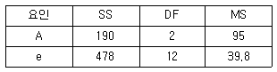
- 2
- 3
- 4
- 5
(정답률: 82%)

2. 필요한 요인에 대해서만 정보를 얻기 위해서 실험의 횟수를 가급적 적게 하고자 할 경우 대단히 편리한 실험이지만 고차의 교호작용은 거의 존재하지 않는다는 가정을 만족시켜야 하는 실험계획법은?
- 교락법
- 난괴법
- 분할법
- 일부실시법
(정답률: 83%)
3. 요인배치법에서 인자수나 수준수가 증가할 때 나타날 수 있는 문제점이 아닌 것은?
- 시간 및 비용이 많이 든다.
- 실험을 수일간 하여야 하므로 랜덤화가 어렵다.
- 실험을 실시함에 있어서 완전 랜덤화가 잘 된다.
- 실험을 통계적 관리상태로 실시하는 것이 어려워진다.
(정답률: 86%)
4. 반복이 없는 모수모형의 3원배치법 분산분석 결과 A, B, C 주효과만 유의한 경우 3인자의 수준조합에서 신뢰구간 추정시 유효반복수를 구하는 식은? (단, 인자 A, B, C의 수준수 는 각각 ℓ, m, n이다.)
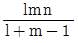
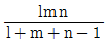
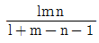
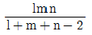
(정답률: 90%)
5. 4수준, 4반복의 1원배치인 실험을 회귀분석하고자 한다. Sxx=3.20, Sxy=3.40, Syy=4.6981일 때 회귀에 기인하는 불편분산(VR)은 약 얼마인가?
- 1.063
- 1.806
- 2.461
- 3.613
(정답률: 80%)
6. 오차 eij의 성질로 옳지 않은 것은?
- E(eij)eij
- Var(eij)=σ2e
- eij는 랜덤으로 변하는 값이다.
- eij의 분산 σ2e은 E(e2ij)이다.
(정답률: 48%)
7. 실험 용기에 들어 있는 알칼리로 세척 하고 세척효과를 조사하기 위하여 실험 용기 (B)를 랜덤하게 3개 뽑고 4종의 알칼리 농도(A)를 취하여 반복이 없는 2원 배치 실험을 한 결과 T1·=43.6, T2·=39.5, T3·=31.8, T4·=23.4, Se=1.58 임을 알았다. 이때 인자 A의 두 수준 A1과 A4 간의 모평균차의 신뢰구간을 신뢰율 95%로 추정하면? (단, t0.975(6)=2.447이다.)
- 5.27～5.83
- 5.71～7.75
- 6.31～7.15
- 8.92～9.68
(정답률: 77%)
8. 어떤 식품가공사에 납품하는 과수원들의 생산 증대를 위해 새로운 비료를 추천하고자 3개의 비료 회사의 제품을 선정하고, 실험 대상으로 9개의 과수원을 선정하였다. 비료이외에 생산량에 영향을 줄 것으로 판단된 토질을 조사해 보니 다음과 같았다. 어떤 실험 방법을 사용하는 것이 가장 바람직하겠는가?
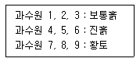
- 난괴법
- 1원배치법
- 일부실시법
- 2원배치법
(정답률: 50%)
9. 인자 A가 4수준, 인자 B가 2수준인 인자를 2수준계 직교배열표에 배치하는 경우, A 인자를 기본표시가 a, b, ab인 열에 배치하고 B인자는 기본표시가 c인 열에 배치할 때 A×B는 다음 어떤 열에 배치되는가?
- a, bc, abc
- b, ac, abc
- ac, bc, ab2
- ac, bc, abc
(정답률: 73%)
10. 다음 중 오프－라인(Off－line) 품질관리의 대표적인 기법으로 가장 적합한 것은?
- 샘플링 검사
- 통계적 공정관리
- 관리도 기법
- 다구찌 품질공학
(정답률: 68%)
11. 2원 배치실험에서 반복의 장점이 아닌 것은?
- 각 인자의 수준수를 작게 할 수 있다.
- 실험의 재현성을 간접적으로 확인할 수 있다.
- 인자의 조합 효과를 분리해서 구해 볼 수 있다.
- 인자의 효과에 대한 검출력이 좋아지고, 실험오차를 보다 정확하게 구할 수 있다.
(정답률: 66%)
12. 인자 A가 변량인자일 때 수준수가 4, 반복수가 6인 1원배치 실험을 하였더니 ST=2.148, SA=1.979이었다. 이때 σ2A의 값은 약 얼마인가?
- 0.109
- 0.126
- 0.163
- 0.241
(정답률: 60%)
13. L9(34)직교배열표의 구성에 관한 설명으로 가장 거리가 먼 것은?
- 0, 1, 2가 각 열에 같은 수 존재한다.
- 기본표시에서 ab2은 a2b와 같다.
- ab열에 있는 숫자 0, 1, 2는 1열과 2열의 수준을 합하여 mod 2로 하여 얻은 값이다.
- 기본표시에서 ab2, a2b은 인자를 할당한 열의 a, b의 교호작용을 나타낸다.
(정답률: 59%)
14. 지분실험법에 관한 설명으로 옳지 않은 것은?
- 인자 A와 B는 확률변수이다.
- 인자 A와 B의 교호작용을 검출해 낼 수 있다.
- 일반적으로 변량인자에 대한 실험계획에 많이 사용된다.
- 인자 A, B가 변량인자인 지분실험법은 먼저 인자 A의 수준이 정해진 후에 인자 B의 수준이 정해진다.
(정답률: 73%)
15. 교락법에 관한 설명으로 가장 거리가 먼 것은?
- 실험횟수를 늘리지 않는다.
- 실험 전체를 몇 개의 블록으로 나누어 배치한다.
- 다른 환경 내의 실험횟수는 적게 하도록 고안되었다.
- 실험으로 실험오차를 적게 할 수 있으므로 실험정도가 향상된다.
(정답률: 66%)
16. 1원 배치에서 개의 상수를 c1, c2 ⋯, cn으로 하고 선형식 L이 다음 [보기]와 같을 때 선형식 L의 단위수 D를 구하는 식으로 옳은 것은?
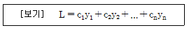
- D=c1+c2+…+cn
- D=(c1+c2+…+cn)2
- D=c21+c22+…+cn2
- D=(c1+c2+…+cn)×n
(정답률: 46%)
17. 6×6 라틴방격의 오차항의 자유도( ① )와 6×6 그레코라틴방격의 오차항의 자유도( ② ) 는 각각 얼마인가?
- ① 15, ② 10
- ① 20, ② 10
- ① 20, ② 15
- ① 20, ② 20
(정답률: 85%)
18. 3가지의 공정라인(A)에서 나오는 제품의 부적합품률이 같은가를 알아보기 위하여 샘플링 검사를 실시하였다. 작업시간별(B)로 차이가 있는가도 알아보기 위하여 오전, 오후, 야간 근무조에서 공정 라인별로 각각 100개씩 조사하여 다음과 같은 데이터가 얻어졌다. 이 자료 를 이용하여 근무조에서 공정 라인별로 각각 100개씩 조사하여 다음과 같은 데이터가 얻어졌다. 이 자료를 이용하여 A2수준의 모 부적합품률 P(A2)의 95[%] 신뢰구간을 구하면 약 얼마인가? (단, Ve=0.0732이다.)
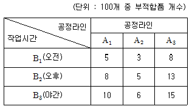
- 1.61～7.73%
- 2.72～8.62%
- 3.11～9.23%
- 4.12～10.33%
(정답률: 68%)
19. 공장실험에서 실험을 통해 최량의 수준을 선정하는 것을 목적으로 채택되며 보통 몇 개의 수준이 형성되는 인자가 있다. 이 인자를 무엇이라고 하는가?
- 제어인자
- 오차인자
- 표시인자
- 교호작용인자
(정답률: 71%)
20. 1차 단위 인자 A 와 2차 단위인자 B를 모수인자로 하고 블록반복 R회의 단일분할 실험을 하여 분산분석을 한 결과이다. 다음 중 옳지 않은 것은?
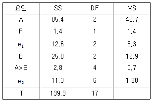
- FA=22.71
- FB=6.86
- Fe1=3.35
- FR=0.22
(정답률: 83%)
2과목: 통계적품질관리
21. 관리한계선에 대한 설명으로 가장 거리가 먼 것은?
- 보통 3σ 관리한계선을 사용한다.
- 관리한계선으로 규격한계선을 사용한다.
- 2σ관리한계선을 경고선(Warning Limit)으로 사용하기도 한다.
- 통계량이 관리한계선을 벗어나면 이상상태라고 판단한다.
(정답률: 70%)
22. Y 공작기계로 만든 샤프트 중에서 랜덤하게 12개를 샘플링하여 외경을 측정하였더니 평균() 112.7, 제곱합(S) 176을 얻었다. 샤프트 외경의 모평균 μ의 95% 신뢰구간은 약 얼마인가? (단, t0.975=2.201(11), t0.975(12)=2.179이다.)
- 112.7 ± 2.045
- 112.7 ± 2.541
- 112.7 ± 3.045
- 112.7 ± 3.541
(정답률: 88%)
23. 계수치 샘플링검사 절차-제3부：스킵로트 샘플링검사 절차(KS Q ISO 2859－3)에 관한 설명으로 가장 옳지 못한 것은?
- 연속로트 시리즈에만 적용하며 고립로트에는 적용하지 않는다.
- 합격판정개수가 0인 샘플링검사에서는 이 규격의 사용을 자제한다.
- 스킵로트 검사의 초기 빈도의 설정은 1/2, 1/3, 1/5의 세 가지 중에서 설정될 수 있다.
- 안전에 관계되는 제품의 특성검사에는 적용하지 않는다.
(정답률: 70%)
24. 빨간 공이 3개, 하얀 공이 5개 들어 있는 주머니에서 임의로 2개의 공을 꺼냈을 때 2개 모두 하얀 공일 확률은 얼마인가?
- 3/14
- 5/14
- 9/28
- 25/64
(정답률: 81%)
25. 관리도에서 중심선의 한쪽에 연속해서 9점이 나타나는 경우, 이를 무엇이라 하는가?
- 연
- 경향
- 주기성
- 우연원인
(정답률: 76%)
26. 샘플링 검사의 OC 곡선에 관한 설명으로 가장 거리가 먼 것은?
- 시료의 크기 n과 합격판정개수 c를 각각 2배씩 하여 주면 OC 곡선은 변하지 않는다.
- 로트의 크기 N과 합격판정개수 c가 일정할 때 시료의 크기 n이 증가하면 OC곡선은 급경사를 이룬다.
- 시료의 크기 n과 로트의 크기 N이 일정하고 합격판정개수 c가 증가하면 OC 곡선은 우측으로 완만해진다.
- 시료의 크기 n과 합격판정개수 c가 일정하고, 로트의 크기 n이 어느 정도 이상 크면 N의 크기는 OC 곡선의 모양에 영향을 거의 주지 않는다.
(정답률: 58%)
27. 공정 평균 부적합품률 0.06, 시료의 크기 100일 때, 2σ 관리한계선 사용하는 P 관리도의 관리한계선을 구한 것으로 옳은 것은?
- UCL=0.1075, LCL=0.0125
- UCL=0.1075, LCL=고려하지 않음
- UCL=0.1312, LCL= 0.0125
- UCL=0.1312, LCL=고려하지 않음
(정답률: 56%)
28. 어떤 금속판 두께의 하한 규격치가 2.3mm 이상이라고 규정되었을 때, 합격판정치는 얼마인가? (단, n=10, k=1.81, σ=0.2mm, α=0.⑤, β=0.10이다.)
- 1.938
- 2.185
- 2.415
- 2.662
(정답률: 52%)
29. 다음 [데이터]에서 중위수(또는 중앙치)는 얼마인가?
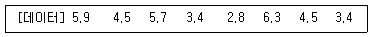
- 3.5
- 4.0
- 4.5
- 5.0
(정답률: 88%)
30. 계량치 축차 샘플링 검사방식 (KS Q ISO 8423：2009)에서 연결식 양쪽규격이 2⑤±5로 규정되어 있다. σ=1.2이고, 표에서 hA=4.132, hR=5.536, g=2.315 및 nt=49를 얻었다면 nCUM＜nt일 때 상측 불합격판정치의 계산식으로 옳은 것은? (단, 프로세스의 표준편차는 LPSD보다 작다.)
- 2.788nCUM+5.1741
- 7.222nCUM+5.1741
- 2.778nCUM+6.6432
- 7.222nCUM+6.6432
(정답률: 34%)
31. Rs관리도의 관리상한선을 다음의 관리도용 계수표를 사용하여 계산하면 어떻게 되는가? (
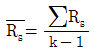
이다.)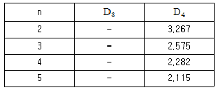
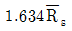
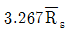
- 알 수 없다.
- 관리 상한선은 고려하지 않는다.
(정답률: 66%)
32. 모수 θ의 모든 값에 대하여
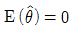
를 만족하는 추정량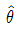
을 무슨 추정량이라 하는가?- 유효추정량
- 충분추정량
- 일치추정량
- 불편추정량
(정답률: 72%)
33. 어떤 품질특성 x를 관리하기 위하여
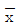
관리도를 적용하고 있다. 지금 이 공정의 평균치의 참값이 관리도의 관리상한과 일치하도록 변화하였다. 앞으로
관리도의 관리상한과 일치하도록 변화하였다. 앞으로  관리도에 2개의 점을 기입 할 때까지 이 공정의 변화를 탐지할 확률은? (단, 공정의 점검은 관리도에 점을 기입할 때만 하는 것으로 한다.)
관리도에 2개의 점을 기입 할 때까지 이 공정의 변화를 탐지할 확률은? (단, 공정의 점검은 관리도에 점을 기입할 때만 하는 것으로 한다.)- 0.9973
- 0.75
- 0.50
- 1.00
(정답률: 41%)
34. 미지의 모집단에서 4번 랜덤 샘플링을 하여 [표]와 같은 값을 얻었다. 이 모집단의 모분산(
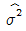
)값을 점추정하면 약 얼마인가?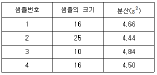
- 3.34
- 4.56
- 5.62
- 6.74
(정답률: 58%)
35. 모집단 상관 유무의 검정 (H0:ρ=0)을 하기 위하여 모집단에서 크기 n의 시료를 추출하였을 때 검정을 하기 위한 검정통계량은 어떤 분포를 하는가?
- F 분포
- ?2 분포
- t 분포
- 지수분포
(정답률: 70%)
36. 다음 중 샘플링검사보다 전수검사를 실시하는 것이 유리한 경우는?
- 검사항목이 많은 경우
- 수명시험을 해야 하는 경우
- 파괴검사를 해야 하는 경우
- 품질특성치가 치명결점을 포함하는 경우
(정답률: 82%)
37. K사에서 판매하는 커피 자동판매기가 1번에 배출하는 커피의 양은 평균 μ, 표준편차 1.0cc 인 정규분포를 따른다. 배출되는 커피량이 120cc 이상이 될 확률이 95% 이상이 되도록 하기 위해서는 평균을 약 얼마로 하여야 하는가?
- 118.355
- 120.000
- 121.645
- 123.290
(정답률: 43%)
38. 대학생들이 학년별로 좋아하는 가수가 바뀌는가를 검정하고자 각 학년별로 랜덤으로 100명씩 선정하여 가수 4명 중에서 좋아하는 가수를 조사하여 표를 만들었다. 가장 적합한 검정 방법은?
- 포아송 검정
- 모평균 차 검정
- 동일성 검정
- 모분산 비 검정
(정답률: 74%)
39. 최근 대졸자의 정규직 취업이 사회적 문제로 대두되고 있다. 올해 정부의 대졸 정규직 취업률 목표치인 70%보다 실제 취업률이 낮은지를 검정하기 위하여 대졸자 500명을 조사해본 결과 300명이 정규직으로 취업한 것으로 나타나 목표치보다 낮은 것으로 검증되었다. 올해 취업률에 대한 95% 신뢰상한은 약 얼마인가?
- 0.632
- 0.636
- 0.638
- 0.643
(정답률: 39%)
40. 샘플링을 할 때 샘플 (Sample)이 갖추어야 할 조건으로 적당하지 않은 것은?
- 정밀도가 충분할 것
- 치우침이 충분할 것
- 신뢰할 수 있는 샘플링에 의해서 얻어질 것
- 모집단에 대해 신속히 조처를 취할 수 있을 것
(정답률: 68%)
3과목: 생산시스템
41. 생산형태에 관한 설명으로 옳지 않은 것은?
- 로트크기가 작은 소로트생산은 개별생산에 가깝고 로트크기가 큰 대로트생산은 연속생산에 가까워서 로트생산시스템은 개별생산과 연속생산의 중간형태라고 볼 수 있다.
- 시멘트, 비료 등의 장치산업이나 TV, 자동차 등을 대량으로 생산하는 조립업체에서 볼 수 있는 연속생산은 품질유지 및 생산성 향상이 용이한 반면에 수요에 대한 적응력이 떨어진다.
- 선박, 토목, 특수기계 제조, 맞춤의류, 자동차수리업 등에서 볼 수 있는 개별생산은 수요변화에 대한 유연성이 높으며 생산성 향상과 관리가 용이하다.
- 교량, 댐, 고속도로 건설 등을 프로젝트 생산이라 할 수 있으며, 시간과 비용이 많이 든다.
(정답률: 65%)
42. 워크샘플링 관측치의 변동을 추정하기 위해 관리도를 사용하고자 할 때 가장 적당한 관리도 형태는?
- P 관리도
- U 관리도
- 관리도
- R 관리도
(정답률: 28%)
43. 집중구매(Centralized Purchasing)에 대한 설명으로 맞지 않는 것은?
- 집중구매란 특정의 구매부서에 의해서 구매행위가 일어나는 것을 말한다.
- 분산구매에 비해서 상대적으로 낮은 가격으로 구매할 수 있다.
- 분산구매에 비해서 공급자와 좋은 관계를 유지할 수 있어 좋다.
- 분산구매에 비하여 구매요구에 신속하게 대응할 수 있다.
(정답률: 62%)
44. 다음 중 테일러 시스템과 포드 시스템에 관한 특징이 올바르게 짝지어진 것은?
- 테일러 시스템－저가격, 고임금의 원칙
- 포드 시스템－기초적 시간연구
- 테일러 시스템－직능적 조직
- 포드 시스템－차별적 성과급제
(정답률: 67%)
45. 설비배치의 형태 중 제품별 배치에 관한 설명으로 옳지 않은 것은?
- 다양한 작업으로 작업자의 직무만족이 크다.
- 자재의 운반거리가 짧고 공정흐름이 빠르다.
- 일단 계획이 수립되면 생산계획 및 통제가 쉽다.
- 작업이 단순하여 노무비가 저렴하고, 작업자의 훈련 및 감독이 용이하다.
(정답률: 74%)
46. 총괄생산계획의 변수 중 재고수준에 따라 발생될 수 있는 비용은?
- 잔업수당
- 퇴직수당
- 설비확장비용
- 납기지연으로 인한 손실비용
(정답률: 37%)
47. 연간 10,000단위 수요가 있으며 생산준비비용이 회당 2,000원, 재고유지비용이 연간 단위당 100원일 때 연간 생산율이 20,000단위라면 경제적 생산량과 1회 생산기간(tp)은 각각 약 얼마인가? (단, 1년은 365일이다.)
- 895단위, 12일
- 895단위, 17일
- 633단위, 12일
- 633단위, 17일
(정답률: 32%)
48. 보전활동의 설명 내용으로 가장 올바른 것은?
- 유지활동은 설비의 수명을 늘리고 보전시간을 단축하며 보전을 불필요하게 하는 활동이다.
- 개선활동은 고장을 방지하고 수리하는 활동이다.
- 예방보전은 설비가 고장나지 않도록 설계계획 단계에서 설비의 신뢰성, 보전성, 경제성, 안전성, 조작성을 향상시키는 활동이다.
- 개량보전은 신뢰성, 보전성의 개선 및 설계상의 약점을 개선하는 활동이다.
(정답률: 37%)
49. 5S에 대한 설명 중 가장 관계가 먼 내용은?
- 정돈이란 필요한 것을 필요한 때에 꺼내 사용할 수 있도록 하는 것을 말한다.
- 정리란 필요한 것과 필요 없는 것을 구분하여 필요 없는 것은 없애는 것을 말한다.
- 청결이란 먼지를 닦아내고 그 밑에 숨어 있는 부분을 보기 쉽게 하는 것을 말한다.
- 습관화란 정해진 일을 올바르게 지키는 습관을 생활화하는 것을 말한다.
(정답률: 37%)
50. MRP 시스템의 출력결과와 가장 거리가 먼 것은?
- 계획주문의 양과 시기
- 발령된 주문의 독촉 또는 지연 등의 여부
- 안전재고 및 안전조달기간
- 계획납기일
(정답률: 65%)
51. 기호를 사용하여 작업자의 작업을 18개 정도의 기본동작으로 나누어 분석표를 작성하고, 이들을 다시 총괄표에 정리하여 작업개선의 착안점을 찾아내는 데 이용되는 분석은?
- VTR분선
- 서블릭 분석
- 메모동작분석
- 작업자공정분석
(정답률: 67%)
52. 일반적으로 공정대기현상이 발생하는 경우로 옳지 않은 것은?
- 각 공정 간의 평형화가 되어 있지 않기 때문에 발생
- 일반적인 여력의 불균형 때문에 발생
- 직렬공정으로부터 흘러들어올 때 발생
- 전후공정의 작업시간이 다를 때 발생
(정답률: 63%)
53. 총괄생산계획 (APP) 전략 중 고용수준을 수요의 변동에 대응시키는 전략에서 고려되는 비용은?
- 하도급 비용
- 자재구매 비용
- 재고 유지비용
- 신규채용에 따른 광고, 채용 및 훈련비용
(정답률: 70%)
54. 동작경제의 원칙 중 신체사용에 관한 원칙으로 가장 설명이 잘못된 것은?
- 동작은 최적 최저 차원의 신체부위로 행할 것
- 양손을 동시에 사용토록 할 것
- 동작을 편하게 할 수 있도록 할 것
- 동작은 거리가 최소가 될 수 있도록 직선으로 할 것
(정답률: 63%)
55. 로트 생산이나 대량생산에 비해 개별생산시스템의 일정계획이 더 어렵다. 다음 중 그 이유에 대한 설명으로 가장 옳지 못한 것은?
- 제품별 가공방법이 서로 다른 경우가 많다.
- 설비 및 장비가 범용이다.
- 주문 받기 전 계획된 일정계획을 수립하기 어렵다.
- 생산방식이 제품별 배치이다.
(정답률: 59%)
56. 다음 중 JIT 생산방식의 특징을 표현한 것으로 틀린 것은?
- 생산준비시간의 최소화 추구
- 필요한 양만큼 제조 및 구매
- U자형 Cell형 배치
- 고정적인 직무할당
(정답률: 61%)
57. 다음 중 누적예측오차(Cumulative Sum of Forecast Errors)를 절대평균편차(Mean Absolute Deviation)로 나눈 것을 무엇이라고 하는가?
- CMA(평균중심이동)
- MSE(평균자승오차)
- SC(평활상수)
- TS(추적지표)
(정답률: 64%)
58. 다음 작업들을 긴급률법으로 작업순서를 결정하려 한다. 작업 우선순위가 높은 순으로 나열된 것은? (단, 현재 날짜는 9월 1일 아침이고 휴일은 없다.)
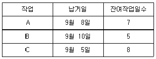
- B → C → A
- C → B → A
- A → B → C
- C → A → B
(정답률: 57%)
59. 레이팅(Rating)의 정의로 가장 올바른 것은?
- 정상작업 페이스와 비교하여 관측평균시간치를 보정해 주는 과정
- 작업자의 작업방법을 엄격히 평가하는 과정
- 관측시간을 여유시간으로 환산하는 과정
- 작업자의 작업시간을 실측하는 과정
(정답률: 58%)
60. 주공정선(Critical Path)에 대한 설명으로 가장 올바른 것은?
- 주공정선은 2개 이상 존재할 수도 있고 존재하지 않을 수도 있다.
- 공정 단축시에는 주공정선상의 작업이 고려되어야 한다.
- 주공정선은 개시점부터 종료점까지의 최단시일 경로이다.
- 주공정선상의 작업 중에도 여유시간이 0 보다 큰 경우가 존재한다.
(정답률: 63%)
4과목: 신뢰성관리
61. 표본의 크기가 n일 때 시간 t를 지정하여 그 때까지의 고장수를 r로 할 때 시간 t에 대한 신뢰도 R(t)의 점추정치를 바르게 표현한 것은?
- r/n
- n/r
- (n-r)/n
- (r-n)/n
(정답률: 69%)
62. 신뢰성 시험을 실시하는 적합한 이유를 [보기]에서 모두 나열한 것은?
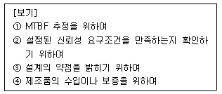
- ①, ②
- ②, ③
- ①, ②, ③
- ①, ②, ③, ④
(정답률: 62%)
63. 욕조곡선형태의 고장률 곡선에서 우발고장기에 주로 생기는 우발고장은 어떤 분포를 사용하여 예측하는가?
- 지수분포
- F 분포
- 정규분포
- 포아송분포
(정답률: 78%)
64. 와이블 분포에 관한 설명으로 옳지 않은 것은?
- 지수분포를 일반화한 분포이다.
- 신뢰성 모델로 가장 자주 사용되는 분포이다.
- 형상모수의 값이 1보다 작은 경우에는 고장률이 증가한다.
- 형상모수의 값이 3.5인 경우에는 정규분포에 거의 근사한다.
(정답률: 79%)
65. 신뢰성 관리에 관한 설명으로 가장 거리가 먼 것은?
- 제품의 사용단계에 있어서는 제품의 신뢰도는 증가하지 않는다.
- 사용과정에서 나타나는 사용 신뢰성은 인간의 요소에 밀접하게 관계된다.
- 신뢰성 보증뿐만 아니라 제품 책임예방을 위해서는 철저한 신뢰성 예측으로 실현할 수 있다.
- 제품의 사용단계에서는 설계나 제조과정에서 형성된 제품의 고유 신뢰도를 가능한 한 장기간 보존하는 것이다.
(정답률: 35%)
66. 수명과 수리시간이 모두 지수분포를 따를 때 고장률(λ) 0.0001/시간, 수리율(μ) 1.5/시간이고 장치에 요구되는 전동작시간(T)이 100시간, 수리제한시간이 30분일 때, 장치의 가용도(Availability)는 약 얼마인가?
- 0.9913
- 0.9933
- 0.9953
- 0.9973
(정답률: 23%)
67. 가속수명시험에서 주로 사용하는 아레니우스(Arrhenius) 모형 t=Aexp(E/kT)의 인자에 관한 설명으로 옳지 않은 것은?
- t는 고장시간을 나타낸다.
- E는 활성화 에너지(Activation Energy)이다.
- k는 볼쯔만 상수로 약 8.167×10-5eV/K이다.
- T는 섭씨온도를 나타낸다.
(정답률: 67%)
68. 샘플 10개를 168시간 동안 수명시험을 하여 고장이 1개도 발생하지 않았다. 신뢰도 90%에서 평균수명의 하한값은 약 얼마인가?
- 562시간
- 730시간
- 876시간
- 1000시간
(정답률: 44%)
69. 부하(Y)의 분포는 μY1,500, σY=30인 정규분포를 따르고, 강도(X)의 분포는 μX=1,600, σX=40인 정규분포를 따른다고 할 때 제품이 고장날 확률은 약 얼마인가?
- 2.28%
- 4.56%
- 95.44%
- 97.72%
(정답률: 42%)
70. 고장평점법에서 평점요소로 기능적 고장영향의 중요(C1), 영향을 미치는 시스템의 범위(C2), 고장발생빈도(C3)를 평가하여 평가점을 C1=6, C2=8, C3=4을 얻었다면 고장평점(Cs)는 약 얼마인가?
- 5.8
- 6.0
- 6.2
- 6.4
(정답률: 64%)
71. A제품의 파괴강도는 50kg/cm2 이상이었다. 파괴강도의 크기가 평균 45kg/cm2이고, 표준편차가 5kg/cm2의 정규분포를 따른다면 이 제품이 파괴될 확률은? (단, Z는 표준분포이다.)
- P(Z≦1)
- P(Z＞1)
- P(Z≦2)
- P(Z＞2)
(정답률: 64%)
72. 다음 중 신뢰도 함수 R(t)를 바르게 표현한 것은? (단, F(t)는 고장분포함수, f(t)는 고장 밀도함수이다.)
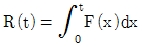
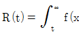

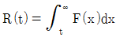
(정답률: 29%)
73. 부품의 신뢰도가 각각 0.90, 0.95, 0.99인 3개의 부품으로 구성된 직렬시스템이 있다. 이 시스템의 신뢰도를 향상시키고자 할 때, 특별한 제한조건이 없는 경우 시스템의 신뢰도에 가장 민감한 부품은?
- 신뢰도가 0.90인 부품
- 신뢰도가 0.95인 부품
- 신뢰도가 0.99인 부품
- 3개 부품 모두 동일하다.
(정답률: 69%)
74. 신뢰성을 향상시키는 설계의 요점에 포함되지 않는 것은?
- 스트레스를 분산시킨다.
- 사용하는 부품의 종류를 늘린다.
- 스트레스에 대한 내성을 갖게 한다.
- 부품에 걸리는 스트레스를 경감시킨다.
(정답률: 73%)
75. 샘플 60개에 대한 수명시험 결과 7시간에서의 고장밀도함수 f(t)가 0.2×10-3이고, 신뢰도 R(t)는 0.728이었을 때 시각 t=7에서의 λ(t) 는 약 얼마인가?
- 0.333×10-5
- 0.286×10-4
- 0.146×10-3
- 0.275×10-3
(정답률: 64%)
76. 부품의 고장률이 λ로 일정하고 지수분포를 따르는 2개의 동일한 부품으로 이루어진 대기 리던던시 시스템의 신뢰도를 바르게 표현한 것은?
- e-λt(1+λ)
- 2e-λt+e-2λt
- e-λt(1+λt)
- 2e-λt(1+ e-λt)
(정답률: 34%)
77. 아이템의 고장 확률 또는 기능 열화를 줄이기 위해 미리 정해진 간격 또는 규정된 기준에 따라 수행되는 보전방식은?
- 사후보전
- 제어보전
- 예방보전
- 개량보전
(정답률: 66%)
78. 4개의 브레이크 라이닝을 시험기에 걸어 마모실험을 하여 수명을 측정하였더니, 200, 270, 310, 440시간으로 나타났다. 수명 270시간에서의 평균순위는 얼마인가?
- 0.333
- 0.367
- 0.400
- 0.667
(정답률: 52%)
79. 그림과 같은 FT도와 일치하는 신뢰성 블록도는?
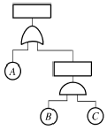
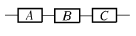
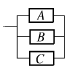
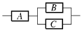
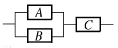
(정답률: 79%)
80. 지수수명분포를 갖는 동일한 컴포넌트를 병렬로 연결하여 시스템 평균수명을 개별컴포넌트 평균수명의 3배 이상으로 하려면 최소 몇 개의 컴포넌트가 필요한가?
- 3개
- 6개
- 11개
- 15개
(정답률: 68%)
5과목: 품질경영
81. 다음 중 한국산업규격(KS)의 부문 분류기호가 틀리게 연결된 것은?
- G－일용품
- J－생물
- S－서비스
- R－물류
(정답률: 60%)
82. 다음 중 품질비용의 3가지 분류항목에 해당되지 않는 것은?
- 예방비용
- 평가비용
- 준비비용
- 실패비용
(정답률: 79%)
83. 품질관리에 일반적으로 사용되는 용어에 대한 설명으로 가장 거리가 먼 것은?
- 부적합 품질비용：나쁜 품질에 의해 발생되는 비용으로 실패비용이라고도 하며, 내부실패비용과 외부실패비용으로 구분한다.
- 6 시그마 수준：부적합품(불량품)의 수가 1백만 개당 3~4개 정도로 부적합품이 거의 발생하지 않는 상태를 의미한다.
- 예방비용：제품이나 서비스가 제대로 작동되는지 검사하는 것과 관련된 비용과 검사, 실험실 실험, 현장실험 등에 해당되는 비용이다.
- DPMO：100만 번의 기회당 부적합 발생건수를 뜻하는 용어이며 DPMO는 시그마수준이 높을 수록 작아진다.
(정답률: 55%)
84. 제품 또는 서비스가 소정의 품질요구를 갖추고 있다는 타당한 신뢰감을 주기위해 필요한 계획적이고 체계적인 활동을 무엇이라 하는가?
- 제품책임
- 품질보증
- 품질감사
- 품질개선
(정답률: 80%)
85. 6시그마 품질혁신운동에서 사용하는 시그마 수준 측정과 공정능력지수(Cp)의 관계를 바르게 설명한 것은?
- 시그마 수준과 공정능력지수는 차원이 다르기 때문에 상호간에 관련성이 없다.
- 시그마 수준은 공정능력지수에 3을 곱하여 계산할 수 있다. 즉, Cp 값이 1이면 3시그마 수준이 된다.
- 시그마 수준은 부적합품률에 대한 관계를 나타내고, 공정능력지수는 양품률을 나타내는 능력이므로 시그마 수준과 공정능력지수는 반비례 관계이다.
- 시그마 수준에서 사용하는 표준편차는 장기표준편차로 계산되고 공정능력지수의 표준편차는 군내변동에 대한 단기표준편차로 계산되므로 공정능력지수는 기술적 능력을 시그마 수준은 생산수준을 나타내는 지표가 된다.
(정답률: 54%)
86. 신 QC 7가지 도구 중 복잡한 요인이 얽힌 문제에 대하여 그 인과관계 및 요인 간의 관계를 명확히 함으로써 적절한 해결책을 찾는데 기여하는 방법은?
- 계통도법
- 연관도법
- 매트릭스도법
- PDPC법
(정답률: 50%)
87. 품질관리 부문을 조직하는데 있어서 일반적인 고려사항으로 가장 거리가 먼 것은?
- 권한보다 책임이 2배 이상 되어야 한다.
- 감독자의 계층을 최소로 한다.
- 감독의 범위를 넓게 한다.
- 하나의 작업군에 동일한 작업요소를 배치한다.
(정답률: 50%)
88. 기업체에서 제안제도를 도입, 운영하고자 하는 목적으로 가장 거리가 먼 것은?
- 종업원 교육을 통한 능력향상 개발
- 작업장, 안전환경 개선으로 인한 산업재해의 근절
- 능력별 임금조정의 기초자료로 이용
- 원가절감, 품질 및 생산성 향상 등 개선실시를 통한 업적 향상
(정답률: 63%)
89. 게이지 R&R 평가 결과 %R&R이 18.5%로 나타났다. 이 계측기에 대한 평가와 조치로서 가장 올바른 것은?
- 계측기의 관리가 매우 잘되고 있는 편이므로 그대로 적용하는데 큰 무리가 없다.
- 계측기의 수리비용이나 계측오차의 심각성 등을 고려하여 조치여부를 선택적으로 결정해야한다.
- 계측기 관리가 미흡하며, 반드시 계측기 오차의 원인을 규명하고 해소시켜 주어야만 한다.
- 계측기 관리가 전혀 되지 않고 있으므로 이 계측기는 폐기해야만 한다.
(정답률: 49%)
90. 품질기능전개(QFD)의 가장 큰 효과로 적당한 것은?
- 품질기능전개는 고객의 요구를 제품으로 구현하는 품질특성을 찾는 기법이다.
- 품질기능전개는 생산현장에서 주로 많이 사용된다.
- 품질기능전개는 경쟁사가 없을 때 사용하기 좋다.
- 대체로 품질기능전개에서 사용되는 요소수는 10개 정도의 요소만 다룬다.
(정답률: 70%)
91. 제조공정에 관한 사내표준의 요건이 아닌 것은?
- 실행 가능한 내용일 것
- 정확ㆍ신속하게 개정, 향상시킬 것
- 기록내용은 구체적이고 주관적일 것
- 장기적인 방침 및 체계 하에서 추진할 것
(정답률: 50%)
92. 품질관리의 발전단계로 보아 각 단계별 설명으로 가장 옳지 않은 것은?
- 검사에 의한 품질관리에서는 생산자는 품질에 대하여 책임이 있으며 검사자가 부적합품(불량품)이 소비자에게 보내지지 않도록 해야 한다.
- 통계적 품질관리는 예방의 원칙에 입각하여 합리성과 경제성을 추구하고 제품이 대량생산될 때 일일이 검사할 수 없는 현실적인 문제에 적합하다.
- 전사적 품질관리는 품질분임조운동이 중심시 되는 작업자 개인 중심의 품질개선 활동이다.
- 종합적 품질경영은 소비자를 위한 제품보증 체계와 고객만족을 위한 대폭적인 품질개선을 위해서 창의성과 품질 시스템 구축에 중점을 둔다.
(정답률: 71%)
93. 제조물 책임(PL)에 대한 설명 중 잘못된 것은?
- 제조물 책임법(PL법)의 적용으로 소비자는 모든 제품의 품질을 신뢰할 수 있다.
- 제품엔 결함이 없어야 한다. 만약 제품에 결함이 있으면 제조회사가 변상해야 한다.
- 제품에 결함이 있을 때 소비자는 제품을 만든 공정을 검사할 필요가 없다.
- 기업의 경우 PL법 시행으로 제조원가가 올라갈 수 있다.
(정답률: 61%)
94. 데이터가 존재하는 범위를 몇 개의 구간으로 나누어 각 구간에 들어가는 데이터의 출현도수를 세어서 도수표를 만든 다음 그것을 도형화 한 것을 무엇이라 하는가?
- 특성요인도
- 파레토도
- 산점도
- 히스토그램
(정답률: 54%)
95. 어떤 조립품은 3개의 부품으로 조립된다. 조립품의 공차는 ±0.015가 되어야 하고, 2개의 부품은 공차가 각각 ±0.010으로 이미 만들어져 있다. 다른 하나의 부품의 공차를 약 얼마로 설계해야 하는가?
- ±0.0112
- ±0.0250
- ±0.0110
- ±0.0⑤0
(정답률: 59%)
96. 한국산업규격의 표준서의 서식 및 작성방법 (KS A 0001：2008)에서 표준의 요소에 관한 설명 중 맞지 않는 것은?
- 부속서는 내용으로서는 본래 표준의 본체에 포함시켜도 되는 사항이지만, 표준의 구성상 특별히 추려서 본체에 준하여 정리한 것이다.
- 해설은 본문, 각주, 비고, 그림, 표 등에 나타나는 사항의 이해를 돕기 위한 예시이다.
- 본체는 표준 요소를 서술한 부분이다. 다만, 부속서(규정)를 제외한다.
- 본문은 조항의 구성 부분의 주체가 되는 문장이다.
(정답률: 56%)
97. 공정능력 계산 설명 중 가장 옳지 못한 것은?
- Cp는 산포에 대한 공정능력을 측정하나, 평균치의 치우친 정도는 알 수 없다.
- Cpk는 치우침을 고려한 공정능력으로 품질이 안정상태일 때 Cp보다 값이 크다.
- 품질 특성에 대해 상한규격만 존재할 때는 CpU를 측정한다.
- Dp는 공정능력비라 부르고, Cp의 역수이다.
(정답률: 50%)
98. 버어만(L. C. Verman)이 제시한 표준화 공간에서 표준화의 구조 중 국면(Aspect)에 해당되 지 않는 것은?
- 시방
- 품종의 제한
- 공업기술
- 등급 부여
(정답률: 62%)
99. 로버트 클라인(Robert Klein)의 고객욕구의 등급 분류에 관한 모형에 대한 설명으로 가장 잘못된 것은?
- 기대욕구는 고객이 필수적으로 충족시킬 것을 요구하는 기본적인 욕구로 충족되지 않으면 고객은 매우 실망하나 충족된다고 해서 만족이 증대되지는 않는다.
- 저충격욕구란 고객이 이 욕구에 대해 언급을 하나 실제로는 고객의 전체 만족도와는 직접적인 관련이 거의 없는 욕구를 말한다.
- 고충격욕구란 규명된 중요도와 약한 상관관계에 있어 웬만큼 충족되어도 고객이 만족하지 않는 욕구를 뜻한다.
- 숨겨진 욕구는 고객이 그 중요성을 인지 못하거나 또는 중요하지 않다고 생각하는 욕구이지만 욕구가 충족되면 강한 만족을 느끼는 욕구이다.
(정답률: 60%)
100. 품질시스템의 일반적인 내용으로 가장 거리가 먼 것은?
- 구체적으로는 품질경영 시스템을 말한다.
- 조직구조, 절차, 프로세스 및 자원 등의 네트워크이다.
- 품질목표를 충족시키는 데 필요한 유기체이다.
- 품질에 관한 조직의 전반적인 의도이다.
(정답률: 39%)